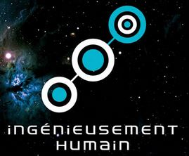

Partir Au Vert
stagiaire

Développement de nouvelles fonctionnalités. Création d'un espace sécurisé pour les partenaires. Gestion de partenaires via l'espace administrateur. Refactorisation du code.
Wild Code School
Formation développeur d'application web, web mobile

Développer les parties front-end et back-end de plusieurs applications web ou web mobile en intégrant les recommandations de sécurité Plusieurs projets développé en groupe et individuellement .
Esdi European Helpdesk
Technicien Helpdesk niveau 2

Résoudre les incidents techniques, signalés par les utilisateurs. Ainsi que la connexion réseau, la bureautique et diverses applications.
Stellantis, Géodis, Plastic Omnium
Agent de fabrication en montage-assemblage
Chargé de vérifier la qualité et la conformité des pièces à la sortie de la presse, ponçage si nécessaire, pose d'écrou à sertir, assemblage des hayons, contrôle final des peintures.
Stellantis, Géodis, Plastic Omnium
Agent de fabrication en montage-assemblage
Chargé de vérifier la qualité et la conformité des pièces à la sortie de la presse, ponçage si nécessaire, pose d'écrou à sertir, assemblage des hayons, contrôle final des peintures.
Stellantis, Géodis, Plastic Omnium
Agent de fabrication en montage-assemblage
Chargé de vérifier la qualité et la conformité des pièces à la sortie de la presse, ponçage si nécessaire, pose d'écrou à sertir, assemblage des hayons, contrôle final des peintures.
language de programation
Dipômes
date
Développeur web et web mobile niveau Bac + 2
Wild Code School
la loupe
date
Développeur web et web mobile niveau Bac + 2
Wild Code School
la loupe